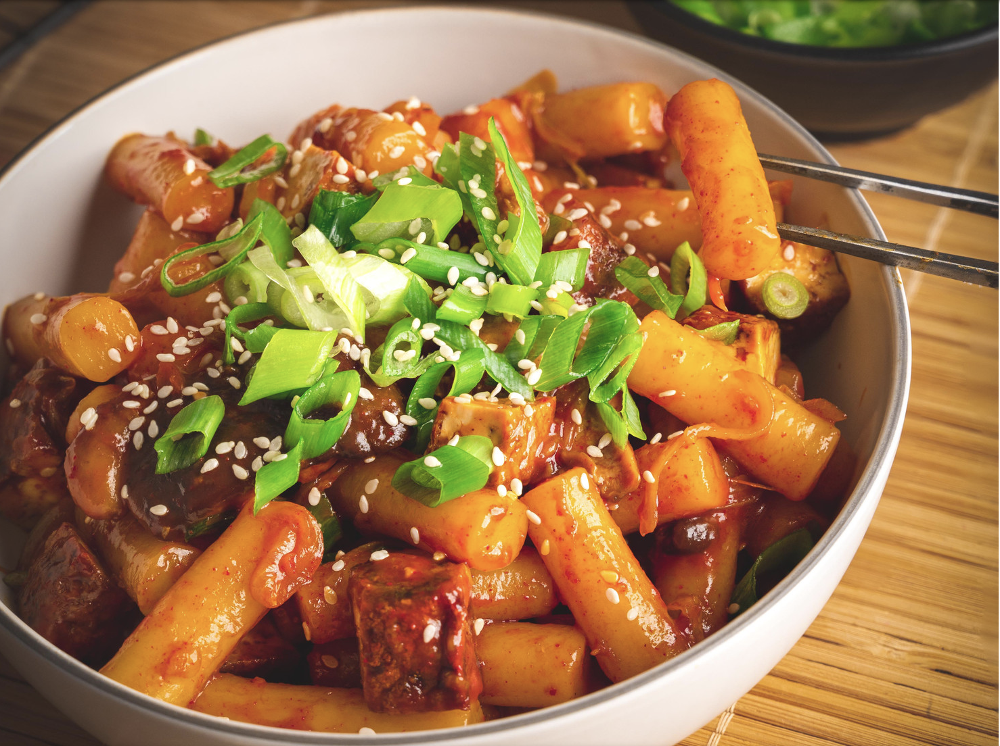

Tteokbokki (Korean Spicy Rice Cake)

Description
Posted on insightflavour by Łukasz Babral on January 9, 2022, Tteokbokki is a "popular Korean comfort food,
in recent years also popular as street food. It is prepared with Tteok - delicious, chewy rice cakes served
with Gochujang based sauce. There are many different varieties of the dish, with many different ingredients. S
one of them are eggs, seafood, tofu, ramen and even cheese".
Ingredients
- 500g of Tteok (You can get them online or from the Asian supermarket, they come fresh, dry or frozen. Depending on what type of Tteok you got, some require soaking in water before cooking)
- 150g of shitake mushrooms, cut in half
- 200g of smoked tofu
- 1 shallot, sliced
- 4 garlic cloves, minced
- 1/4 of medium-sized daikon cabbage, sliced
- 400ml of water
- 3tbsp of Gochujang paste
- 3tbsp of sweet soy sauce (it contains less salt, add less if using standard soy sauce)
- sesame oil for frying
- spring onions for garnish
- sesame seeds for garnish
Methodology
- Slice tofu into four slabs and pan-fry on high heat with sesame oil until golden brown on both sides. When ready add 2tbsp of sweet soy sauce and glaze all around, set aside on the plate ready for later (chop into cubes).
- Stir-fry shallot and mushrooms until cooked through, add sliced cabbage and continue cooking for another minute. Season with 1tbsp of soy sauce and remove from the pan ready for later.
- In the deep frying pan bring 400ml of water to boil and whisk in 3tbsp of Gochujang chilli paste. Add Tteok and boil them in the sauce until cooked through (Use the packet instructions as a guide, cook longer if you prefer them softer, it takes around 10 minutes plus for the dry ones)
- Once Tteok is ready add your stir-fried veggies and diced tofu. Adjust the seasoning and serve garnished with sliced spring onions and sesame seeds. Smacznego!